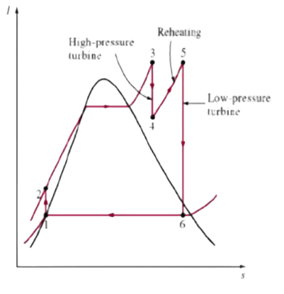
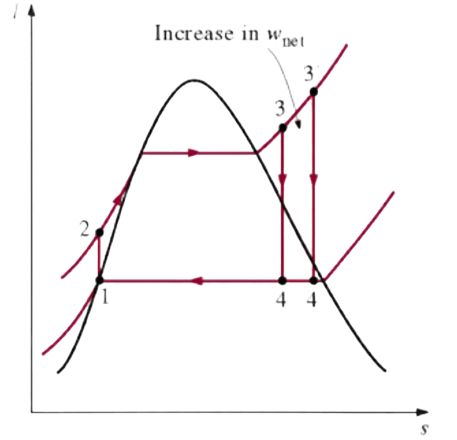
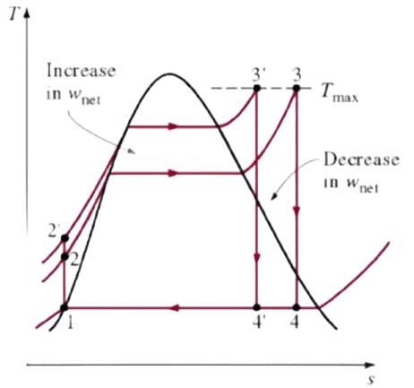

3 główne sposoby poprawy sprawności obiegu Rankine’a

1. Obniżenie ciśnienia i temperatury w skraplaczu

2. Podniesienie temperatury przegrzewania pary - wtórny przegrzew pary

3. Wzrost ciśnienia pary w kotle